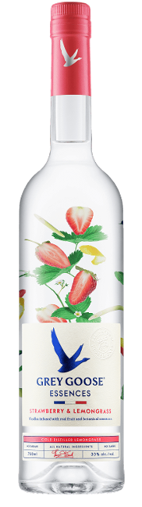
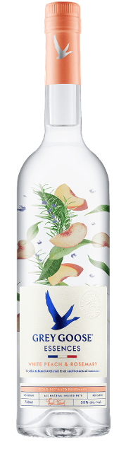
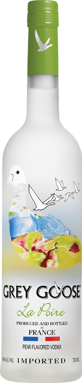
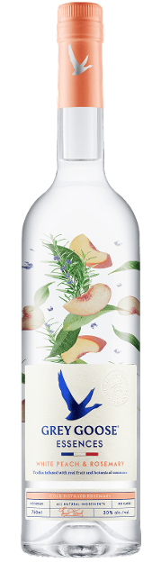
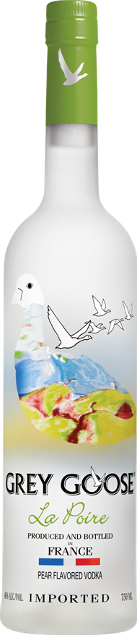
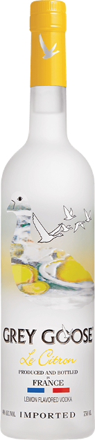
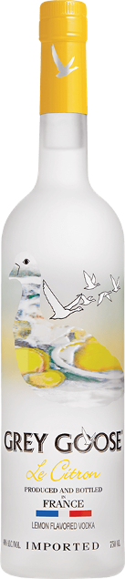

Celebrate with Grey Goose
Grey Goose is a truly modern vodka, inspired by more than a century of wine-making expertise and craftsmanship. It is the fine French grapes and the fifth distillation that gives Grey Goose a distinctive flavour with an exceptionally fresh, smooth and fruity taste. The perfect accompaniment for every celebration! Discover more about the portfolio of masterfully infused flavours. Welcome to a world of playful luxury, celebration and delicious cocktails... Welcome to Greygoose.com.
THE CELEBRATION COLLECTION
With a flavour for every occasion, you are spoilt for choice. Grey Goose vodka flavours include aromatic Red Berry, Peach, Tropical Lemon and our limited edition Summer Watermelon. Explore the full celebration collection here.


 



 
